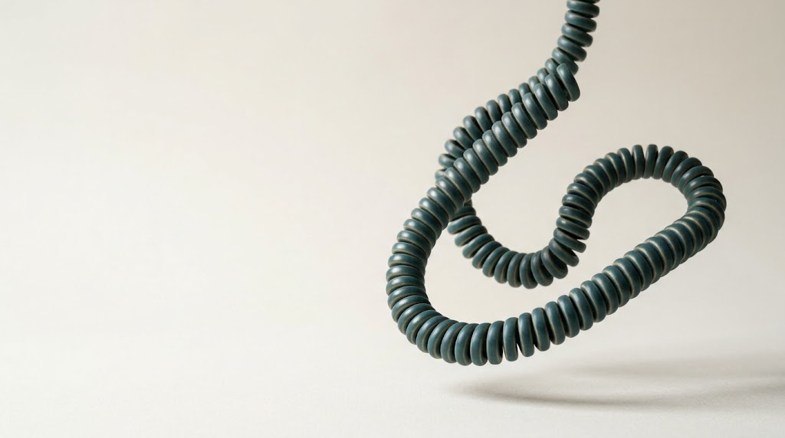

De telefonist die altijd opneemt.
Hugo is de AI-telefonist die de telefoon van jouw zaak aanneemt. Hij voert het gesprek in natuurlijk Nederlands, beantwoordt vragen, legt afspraken vast en levert na elk gesprek een heldere samenvatting.
Kosteloze demo, ingericht op jouw zaak.
Praat met Hugo.
Voer een live gesprek met Hugo, rechtstreeks vanuit je browser. Ervaar hoe hij de telefoon aanneemt voor een garage, restaurant of kapsalon.
Probeer“Kan mijn auto donderdag voor de APK?”
De voorbeeldzaken zijn fictief. Gesprekken worden opgenomen. Privacy
- Beller
- Sanne de Vries
- Waarvoor
- APK voor haar Volkswagen Polo
- Afgesproken
- Donderdag 08:30, auto brengen
- Let op
- Vroeg ook naar winterbanden. Wil graag een prijs.
Jij werkt door. Hugo houdt bij wie er belde.
Elk gesprek eindigt in een beknopte samenvatting: wie er belde, met welke vraag, en welke afspraken er zijn gemaakt. Zo houd je overzicht zonder zelf de telefoon op te nemen.
Altijd bereikbaar
Hugo neemt elk gesprek direct aan, ook op piekmomenten, tijdens de lunch en buiten openingstijden. Geen wachtrij, geen voicemail.
Natuurlijk Nederlands
Hugo spreekt vloeiend en houdt het gesprek gaande, ook als een beller tussendoor iets vraagt. Wie vraagt of hij met een computer spreekt, krijgt een eerlijk antwoord.
Afgestemd op jouw zaak
Openingstijden, diensten, prijzen en aanbod: Hugo werkt met de gegevens van jouw zaak en voegt niets toe wat er niet in staat.
Niets blijft liggen
Vragen die Hugo niet kan beantwoorden, legt hij vast in de samenvatting, met naam en nummer van de beller, zodat je gericht kunt opvolgen.
Hugo leert jouw zaak kennen.
Kan mijn auto donderdag voor de APK?
APK, onderhoud of een proefrit: Hugo legt de afspraak vast, inclusief kenteken en contactgegevens.
Bel deze zaak →Hebben jullie zaterdag nog een tafel voor vier?
Reserveringen, groepsgrootte en dieetwensen worden direct en volledig genoteerd.
Bel deze zaak →Kan ik morgen nog geknipt worden?
Hugo stemt een tijdstip af en legt de gewenste behandeling vast.
Bel deze zaak →Hoor Hugo met de naam van jouw zaak.
Laat je gegevens achter. We stellen een demo samen met de naam, openingstijden en het aanbod van jouw zaak, en sturen je de link per e-mail.
De prijs stemmen we af op jouw zaak en het aantal gesprekken dat binnenkomt.